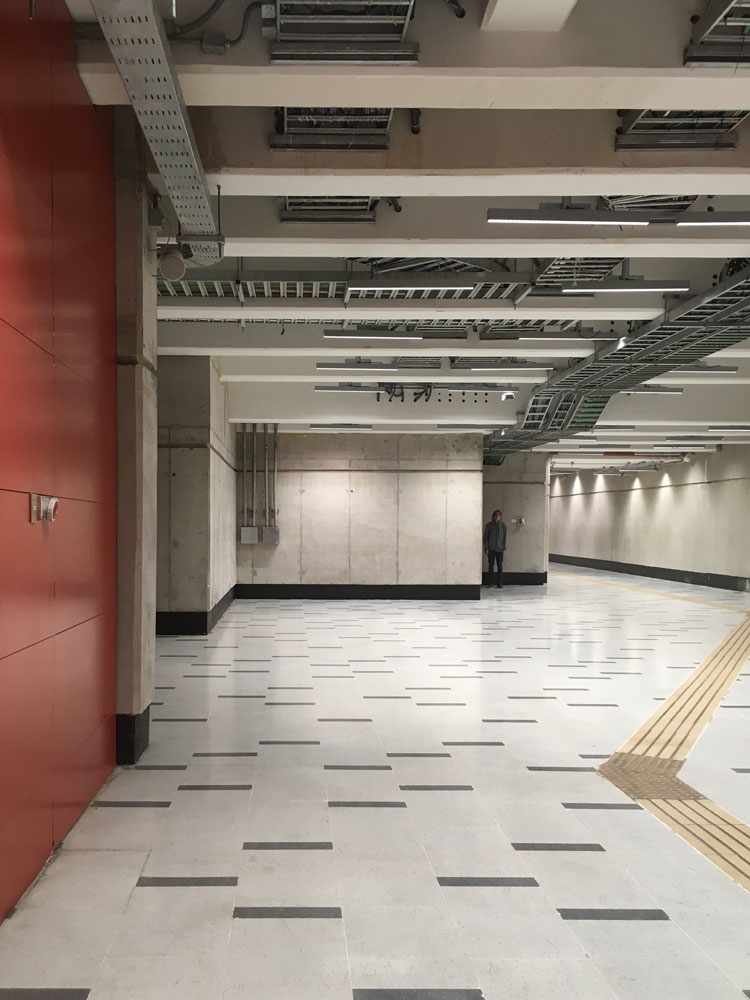

Febrero, 2020

El pulso que nos llama
Producido por Matías Serrano en 2019
Reproducido en encuentro Asimtria 15 - Pumpumyachkan en 2020, en Ayacucho, Perú
Fotografía en metro Universidad de Chile por Bárbara Molina
"El pulso que nos llama" corresponde a una composición basada en el paisaje sonoro de los andenes de la principal estación del metro de Santiago, la estación Baquedano, bajo la actualmente llamada Plaza de la Dignidad. El paisaje, que sirve de base para la obra, fue grabado dos semanas antes del estallido social del 18 de octubre en Chile, fecha desde la cual el dispositivo arquitectónico se ha mantenido cerrado, sin acceso a las y los pasajeros, funcionando también como cuartel para el aparato represor y utilizado como centro de tortura en los primeros días del movimiento.
Inicialmente, mi idea era construir un disco de ambient basado en los paisajes sonoros del metro, aludiendo a que en mi infancia, en los años 90, el metro de Santiago reproducía música ambiental para las y los pasajeros, práctica que se dejó de utilizar. Según preguntas realizadas a cercanos, nadie recuerda que el metro haya tenido este tipo de música, ni menos saben cuando se dejó de utilizar, y debido a que el metro es una empresa privada, no se hace muy sencillo acceder a esa información. Al momento de producir el álbum, éste lleva casi 15 años siendo un espacio colapsado por la gran afluencia que le generó el nuevo transporte público, por lo que ese paisaje industrial con música ambient, almacenado en mi imaginación, es algo que solo se puede imaginar y construir, más no acceder nuevamente. Deseché por ahora la idea de publicar este álbum, ya que las evasiones masivas realizadas al metro fueron el detonante del estallido social ocurrido en Chile, y que aún nos atraviesa, prefiriendo guardar distancia con un tema tan sensible aún para la mayoría de personas que habitan en Chile. El paisaje fue grabado con una Zoom h2n y los elementos sonoros construidos a partir de sonidos de un Casio Tone-bank MA-120.
+info del encuentro en la web.
Escucha en Youtube